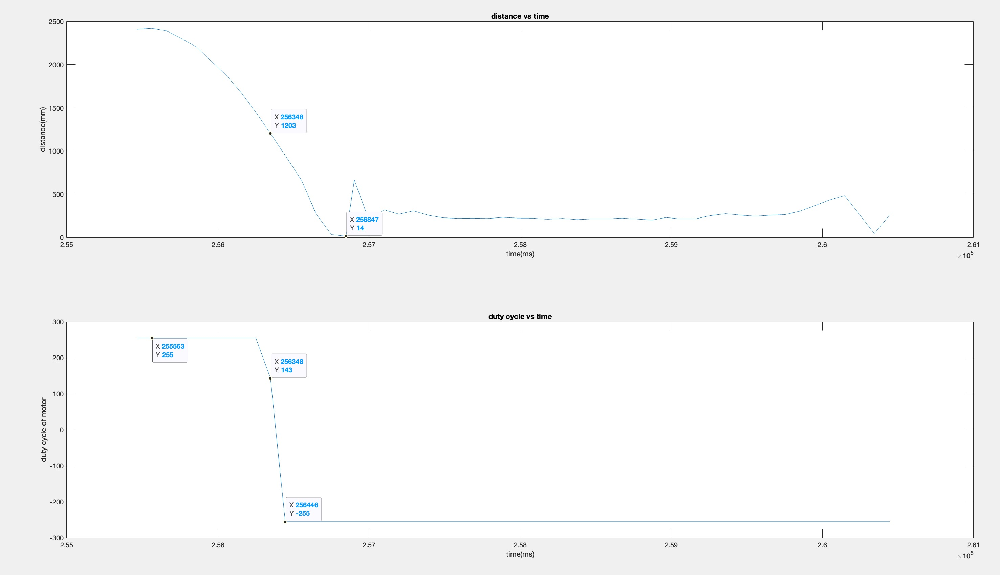
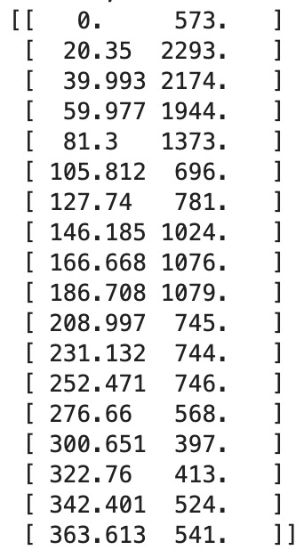

Lab 8 Report
For this we are performing one flip with the robot and a stunt deisnged on our own.
Flip
For this part, I just used PID, and managed to perform the flip with a settings of:
P = 300
I = 0.01
D = 300
target_dis = 1200
So with this setting, the robot is able to rush to the wall with the high P value,
and perform a fast reverse with the high D value. With the high friction of the rubber
flooring, it is able to perform the flip. See Fig.1 for the flip data. And attached video
for the result.

Fig.1 Flip TOF Readings and Motor Duty Cycle
From the Fig.1 you can see that at time stamp 256348, robot started to reverse and the duty cycle
of the motor changed from 255 to -255 very fast. At time stamp 256847 is the lowest TOF reading, that's
when robot is upside down. And started reversing back very fast. But just like in lab 4, the TOF is
out of range so it reads a smaller number which is inaccrurate as it is speeding off to the distance.
I didn't use kalman filter because I see that there isn't too much difference from PID in lab7, and
the PID command allows me more freedom on adjusting the parameters w/o changing too many variables,
so I chose to use PID instead of Kalman out of a bit of lazyness.
Stunt
While I did this at the end of the semester, so I tried doing lab 12's observation loop with a twist.
I made the robot to do the observation loop on its side. And surprisingly, it is more accurate than doing it
on its belly. I just modified lab12's code, instead of letting it turn on its x-axis, I changed it to
control it with PID with the y-axis' gyroscope readings. Below are three successful trails. And Fig.2 is
it's observation loop readings, you can see it turns 20 degrees quite good.

Fig.2 Observation Loop Results